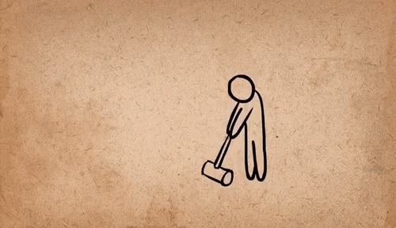
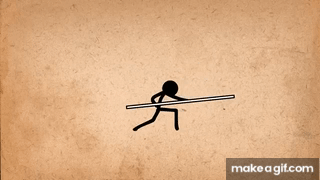
Projet de Recherche
Mon but de projet de recherche étais d'avoir une première expérience et apprentissage sur l'animation 2D.
J'ai voulu faire cet apprentissage en créant un court métrage d'une duré possible entre 20 à 40 secondes entièrement animé en 2D au travers d'un nouveau logiciel: Krita. pour réaliser ce projet, il fallait que je scénarise mon court métrage, créer le scénarimage, ma familiarise avec les outils d'animation de Krita, apprenent les 12 principes de base de l'animation et leurs applications dans le court métrage et finalement que j'anime, render, edit et host le résultat final sur un site web.
Après un parcour difficile et incertain, j'ai réussi à accomplir mon object de recherche. J'ai appris beacoup de chose et je suis fiert du résultat final Plusieurs choses peuvent être amélioré en rapport à certains aspects technique du projet et d'autre en rapport à ma méthode de travail autonome.
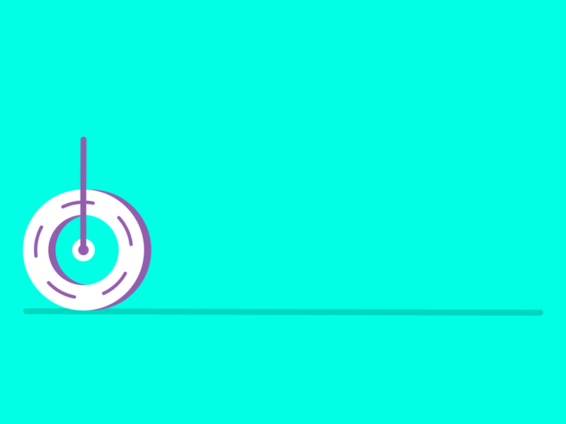
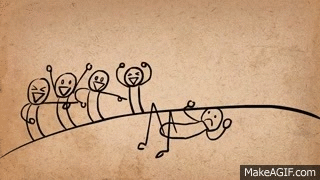
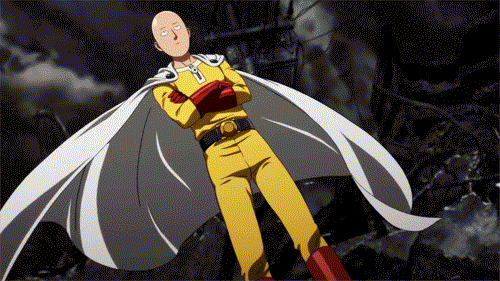
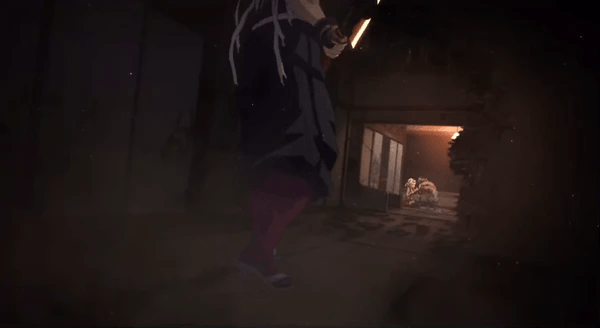
Références Conceptuelles
Le concept initial que j'avais imaginé pour le scénario emprunte beacoup sur l'esthétique japonaise et western du duel. Une confrontation entre 2 personnage me donne un scénario qui explore comment exprimer de la tension en même temps qu'une résolution intense en animation.
Pour me faciliter la production, j'avais aussi envisager d'animer avec un style qui usilise peu de couleur, utilisant que des nuances de gris et noir et blanc.
En ce qui en est du character design, je savais déjà en avance au départ du projet quel étais l'apparence du personnage principal "La Silhouette". Avoir des références sur le mouvement des capes et tissus étais important. L'apparance de l'antagoniste "La Brute" elle, devait être développée.
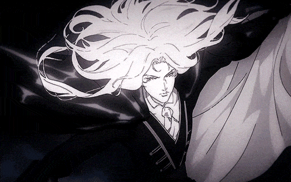
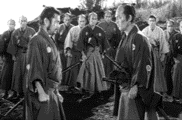
Scénarisation & Scénarimage
La scénarisation a premièrement été rédigée de manière écrite pour mettre les idées du scénario sur papier. La prochaine étape étais de comprendre quel allait être la représentation visuelle, comprendre quel allait être les plans, les différentes perspectives pour raconter le narratif. Le mieux accomplis mon storyboard, le moins j'aurais besoin de réfléchir à comment j'illustre certaines scènes et je peux simplement consulter le storyboard.
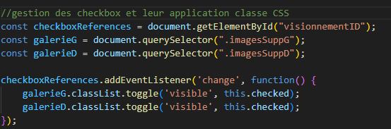
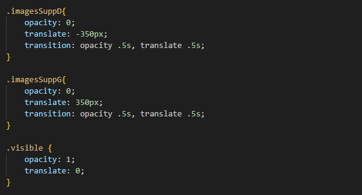
Programmation & Design Web
Le but de mon projet étais l'exploration de l'animation 2D. Un médium qui contien aucune sinon très peu de programmation dans des cas spécifiques comme la gestion de sprites dans l'intérieur d'un engin de jeu. L'aspect le plus simple pour présenter le court métrage étais de le présenter dans un site web qui pourrais dans le futur servir d'une pièce de portfolio en elle même.
Le site web agis comme mon support de présentation. Un design simple qui présente chaques vignettes comme une carte explicative. le html est un header contenant la barre de navigation et le main qui contien une section par vignette de présentation. Le CSS a été utilisé pour formater tout au centre de manière propre et sinon donner une allure thématique à mon court métrage.
Certains éléments contienne du Javascript. Le carrousel utilise une base de génération de carrousel nommé Swipper, dont certains aspect ont été modifié de manière à mieux être intégré et fonctionnel dans le site. Sinon les checkbox dans certaines des vignettes applique une classe CSS pour gérer leur apparence et disparition

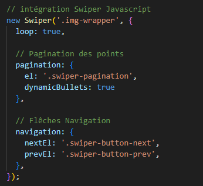
Court Métrage: Sombre Argent
Une Fois les animations terminées. Elles ont été exporté comme séquences d'images, et mise comme clips au travers de Première. L'ajout des sons et l'editing à été terminées et puis Voilà, le court métrage est terminé!